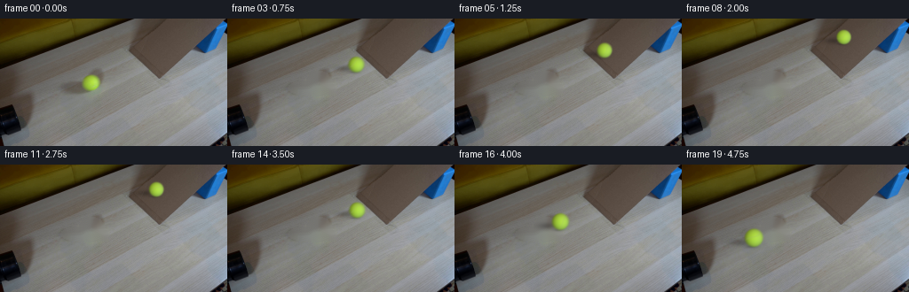
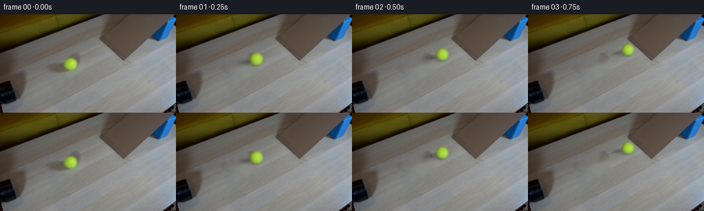
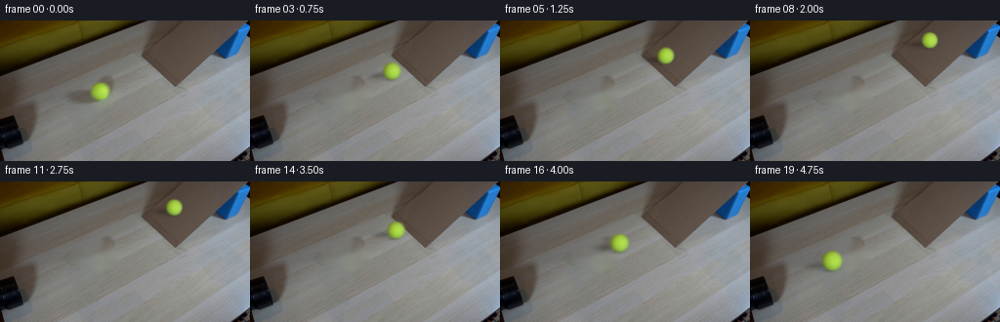

CODING AGENTS AS PIXEL WORLD MODELS
traex/GPT-6.1-Sol · 0019
点击播放 · 原生 RGB 像素
逐轮保存的候选
回放视频、检查图与代码变化。
每份候选均可单独播放。实际图片检查记录在下方工具轨迹中。
候选 01播放与检查图
点击播放 · 原生 RGB 像素


展开代码变化
--- 上一保存版本
+++ 本次保存版本
@@ -0,0 +1,151 @@
+from pathlib import Path
+import numpy as np
+import cv2
+from PIL import Image
+from artifact_io import save
+
+ROOT = Path(__file__).resolve().parent
+H, W = 144, 256
+Y, X = np.mgrid[:H, :W].astype(np.float32)
+
+
+def clean_plate(im):
+ # Remove just the moving ball and its soft cast shadow. Surrounding scene
+ # texture is continued from the actual tabletop in the input photograph.
+ mask = np.zeros((H, W), np.uint8)
+ cv2.ellipse(mask, (103, 73), (15, 14), 0, 0, 360, 255, -1)
+ cv2.ellipse(mask, (88, 78), (20, 8), 0, 0, 360, 255, -1)
+ cv2.ellipse(mask, (113, 79), (9, 7), 0, 0, 360, 255, -1)
+ plate = cv2.inpaint(im, mask, 5, cv2.INPAINT_TELEA)
+ # A second, low-frequency interpolation keeps the large removed shadow
+ # from being filled with one of its own dark boundary pixels.
+ lo = cv2.GaussianBlur(plate.astype(np.float32), (0, 0), 1.25)
+ core = cv2.GaussianBlur((mask / 255.).astype(np.float32), (0, 0), 1.2)
+ plate = plate.astype(np.float32) * (1 - .28 * core[..., None]) + lo * (.28 * core[..., None])
+ return plate
+
+
+# State is distance along one unchanging track. An incline converts the
+# ball's rolling kinetic energy to potential energy, then reverses it.
+X0, Y0 = 102.5, 72.6
+BASE_X, BASE_Y = 161.5, 44.25
+V = 57.0
+ENTRY = (BASE_X - X0) / V
+UP_V = 39.0
+UP_A = 35.5
+STOP = UP_V / UP_A
+RAMP_TIME = 2 * STOP
+
+
+def state(t):
+ if t <= ENTRY:
+ dx = V * t - 1.2 * t * t
+ # Entry is reached at the calibrated point; the tiny rolling loss is
+ # compensated in this perspective parameterization.
+ dx *= (BASE_X-X0) / (V*ENTRY-1.2*ENTRY*ENTRY)
+ x = X0 + dx
+ y = Y0 + (BASE_Y-Y0) * dx / (BASE_X-X0)
+ phase = dx * 1.11 / 9.4
+ else:
+ u = t - ENTRY
+ if u <= RAMP_TIME:
+ d = UP_V * u - .5 * UP_A * u * u
+ x, y = BASE_X + d, BASE_Y - 1.105 * d
+ phase = (BASE_X-X0)*1.11/9.4 + d*1.49/8.3
+ else:
+ u -= RAMP_TIME
+ d = V*u - .5*5.5*u*u
+ x = BASE_X - d
+ y = BASE_Y + d * (Y0-BASE_Y)/(BASE_X-X0)
+ phase = (BASE_X-X0)*1.11/9.4 - d*1.11/9.4
+ # Perspective shrinking along the table, independent of elevation.
+ r = 9.85 * (1 - .00218 * (x-X0))
+ return x, y, r, phase
+
+
+def draw_shadow(frame, cx, cy, rad):
+ k = rad/9.85
+ # Light arrives from camera-right. The contact shadow is smaller and
+ # denser than the soft extended shadow cast across the wooden surface.
+ ex = (X-(cx-13.7*k))/(18.4*k)
+ ey = (Y-(cy+4.5*k))/(5.25*k)
+ soft = np.exp(-1.8*(ex*ex+ey*ey))
+ ex2 = (X-(cx-2.8*k))/(7.6*k)
+ ey2 = (Y-(cy+9.0*k))/(2.35*k)
+ contact = np.exp(-1.9*(ex2*ex2+ey2*ey2))
+ opacity = .245*soft + .23*contact
+ out = frame * (1-opacity[...,None])
+ # Very weak yellow-green color bleed into the close contact area.
+ reflection = np.exp(-2*((X-cx-5.4*k)/(8*k))**2 - 2*((Y-cy-9*k)/(2.9*k))**2)
+ out += reflection[...,None] * np.array([-.8, 2.0, -2.7])
+ return out
+
+
+def draw_ball(frame, cx, cy, rad, angle):
+ s = 4
+ # Small local supersampled footprint: felt and edge softness stay at the
+ # source photograph's resolution, not that of a sharp vector drawing.
+ x0=max(0,int(np.floor(cx-rad-3))); x1=min(W,int(np.ceil(cx+rad+4)))
+ y0=max(0,int(np.floor(cy-rad-3))); y1=min(H,int(np.ceil(cy+rad+4)))
+ if x1<=x0 or y1<=y0:
+ return frame
+ yy,xx = np.mgrid[y0*s:y1*s, x0*s:x1*s].astype(np.float32)
+ u=((xx+.5)/s-cx)/rad
+ v=((yy+.5)/s-cy)/rad
+ rr=u*u+v*v
+ z=np.sqrt(np.clip(1-rr,0,1))
+ a=(rr<1).astype(np.float32)
+ rgb=(np.array([96.79,117.80,52.23]) + u[...,None]*np.array([25.99,33.28,26.02])
+ +v[...,None]*np.array([-4.98,-.65,4.36])+z[...,None]*np.array([77.41,102.57,15.10]))
+ # Rotate sphere coordinates about the axis perpendicular to its straight
+ # track, while keeping world-space lighting fixed.
+ axis=np.array([.434,.901,0.],np.float32)
+ n=np.stack([u,v,z],axis=-1)
+ c=np.cos(angle);sn=np.sin(angle)
+ q=n*c+np.cross(axis,n)*sn+(n@axis)[...,None]*axis*(1-c)
+ # Fine irregular fuzz, attached to the rolling surface.
+ noise=(np.sin(q[...,0]*67.1+q[...,1]*43.7+q[...,2]*38.2)
+ +.5*np.sin(q[...,0]*134.3-q[...,1]*91.7+q[...,2]*72.1)
+ +.4*np.sin(q[...,0]*26.2+q[...,1]*87.3-q[...,2]*51.1))
+ rgb += noise[...,None] * np.array([1.6,1.9,1.6])
+ # Recessed curved tennis-ball seam, subtle in this small, soft image.
+ lam=np.arctan2(q[...,2],q[...,0])
+ seamdist=(q[...,1]-.36*np.sin(2*lam+.8))
+ seam=np.exp(-(seamdist/.039)**2) * (.18+.35*z)
+ rgb=rgb*(1-seam[...,None]) + np.array([164.,177.,119.])*seam[...,None]
+ # Premultiplied blur includes the camera's small point-spread function.
+ aa=cv2.GaussianBlur(a,(0,0),.55*s)
+ prem=cv2.GaussianBlur(rgb*a[...,None],(0,0),.55*s)
+ aa=cv2.resize(aa,(x1-x0,y1-y0),interpolation=cv2.INTER_AREA)
+ prem=cv2.resize(prem,(x1-x0,y1-y0),interpolation=cv2.INTER_AREA)
+ result=frame.copy()
+ result[y0:y1,x0:x1]=result[y0:y1,x0:x1]*(1-aa[...,None])+prem
+ return result
+
+
+def main():
+ original=np.asarray(Image.open(ROOT/'first_frame.png').convert('RGB'))
+ plate=clean_plate(original)
+ frames=[original.copy()]
+ states=[]
+ for i in range(1,20):
+ t=i/4.
+ cx,cy,r,phase=state(t)
+ # Short physical exposure, rather than artificial frame interpolation.
+ samples=[]
+ for dt in (-.018,0,.018):
+ x,y,r,a=state(t+dt)
+ f=draw_shadow(plate.copy(),x,y,r)
+ samples.append(draw_ball(f,x,y,r,a))
+ f=np.mean(samples,axis=0)
+ frames.append(np.clip(np.rint(f),0,255).astype(np.uint8))
+ states.append([i,cx,cy,r,phase])
+ frames=np.stack(frames)
+ save(frames,ROOT)
+ temp=ROOT/'.tmp'
+ temp.mkdir(exist_ok=True)
+ Image.fromarray(np.clip(plate,0,255).astype(np.uint8)).save(temp/'clean_plate.png')
+ np.savetxt(temp/'motion.txt',states,fmt='%.4f')
+
+if __name__=='__main__':
+ main()
候选 02播放与检查图
点击播放 · 原生 RGB 像素

展开代码变化
--- 上一保存版本 +++ 本次保存版本 @@ -28,7 +28,7 @@ # State is distance along one unchanging track. An incline converts the # ball's rolling kinetic energy to potential energy, then reverses it. X0, Y0 = 102.5, 72.6 -BASE_X, BASE_Y = 161.5, 44.25 +BASE_X, BASE_Y = 163.1, 43.48 V = 57.0 ENTRY = (BASE_X - X0) / V UP_V = 39.0
可观测工具轨迹
实际执行的命令与返回图片。
命令 1exit 0
/bin/bash -lc "ls -la && cat prompt.txt && printf '\\n---RULES---\\n' && cat GENERATION_RULES.md"
命令 2exit 0
/bin/bash -lc "cat artifact_io.py && python - <<'PY'
from PIL import Image
import numpy as np
im=np.array(Image.open('first_frame.png')); print(im.shape)
# quantized color ascii at 128 by 72
im=np.array(Image.open('first_frame.png').resize((128,72)))
for row in im:
s=''
for r,g,b in row.astype(int):
if max(r,g,b)<55: c='#'
elif max(r,g,b)<100:c='x'
elif b>r*1.18 and b>g*1.08:c='B'
elif r>g*1.3 and r>b*1.4:c='R'
elif r>130 and g>125 and b<min(r,g)*.72:c='Y'
elif max(r,g,b)-min(r,g,b)<17:c='.' if r>180 else ':'
elif r>g and g>b: c='w' if r>190 else 'o'
else:c='?'
s+=c
print(s)
PY"命令 3exit 0
/bin/bash -lc "python - <<'PY'
from PIL import Image
import numpy as np,cv2
im=np.array(Image.open('first_frame.png')); print('RGB points grid:')
for y in range(0,144,8):
print(y,' '.join('%3d,%3d,%3d'%tuple(im[y,x]) for x in range(0,256,16)))
print('\\nLuminance:')
a=cv2.resize(cv2.cvtColor(im,cv2.COLOR_RGB2GRAY),(128,72))
chars='@%#*+=-:. '
for row in a: print(''.join(chars[min(9,int(v)//26)] for v in row))
# yellow segmentation
r,g,b=[im[:,:,k].astype(float) for k in range(3)]; mask=((r>100)&(g>105)&(g>b*1.5)&(r>b*1.4)).astype('uint8')
n,l,st,c=cv2.connectedComponentsWithStats(mask)
print('yellow:',st,c)
# blue segmentation
mask=((b>r*1.15)&(b>g*1.02)&(b>65)).astype('uint8');n,l,st,c=cv2.connectedComponentsWithStats(mask); print('blue:',st[st[:,4]>15],c[st[:,4]>15])
PY"命令 4exit 0
/bin/bash -lc "python - <<'PY'
from PIL import Image
import numpy as np
im=np.array(Image.open('first_frame.png')).astype(int)
for y in range(88,144,2):
print(y, ''.join('X' if max(im[y,x])<45 else 'x' if max(im[y,x])<80 else '-' if max(im[y,x])<105 else '.' for x in range(0,60)))
print('\\nBall patch luminance x82..121 y56..89:')
chars='@%#*+=-:. '
for y in range(56,90):
print(y,''.join('Y' if im[y,x,1]>im[y,x,2]*1.5 and im[y,x,1]>110 else chars[min(9,int(im[y,x].mean())//26)] for x in range(70,126)))
print('\\nRamp segmentation right top (x120..256 every 2)\\n')
for y in range(0,86,2):
print('%2d'%y, ''.join('B' if im[y,x,2]>im[y,x,0]*1.2 else 'o' if im[y,x,0]>im[y,x,2]+15 and im[y,x,0]<105 else 'x' if im[y,x].max()<70 else ':' if im[y,x].max()<120 else '.' for x in range(120,256,2)))
PY"命令 5exit 0
/bin/bash -lc "python - <<'PY'
import numpy as np
from PIL import Image
im=np.array(Image.open('first_frame.png'))
for y in range(62,84,2):
print(y,' '.join(str(tuple(im[y,x])) for x in range(90,116,2)))
# gradients location cardboard edges
for y in range(0,70,4):
r,g,b=[im[y,:,i].astype(int) for i in range(3)]
m=(r-b>13)&(r<110)&(r>50)&(np.arange(256)>135)
print(y,np.flatnonzero(m).tolist())
PY"命令 6exit 0
/bin/bash -lc "python - <<'PY'
import numpy as np,cv2
from PIL import Image
im=np.array(Image.open('first_frame.png')).astype(float)
y,x=np.mgrid[:144,:256];cx,cy,r=102.4,72.5,9.7
u=(x-cx)/r;v=(y-cy)/r;z=np.sqrt(np.maximum(0,1-u*u-v*v));m=(u*u+v*v<.65)
A=np.stack([np.ones_like(u),u,v,z],axis=-1)
p=np.linalg.lstsq(A[m],im[m],rcond=None)[0];print(p)
err=im-A@p; print('std',np.std(err[m],0),'meanmax',np.min(A[m]@p,axis=0),np.max(A[m]@p,axis=0))
print('pixels per seam residual >15:',[(int(a),int(b),err[b,a].round(1).tolist()) for b,a in zip(*np.where((err[:,:,2]>15)&m))])
PY"命令 7exit 0
/bin/bash -lc "python - <<'PY'
from PIL import Image
import numpy as np
im=np.array(Image.open('first_frame.png')).astype(int)
for y in range(0,38,2):
print('y',y,':',' '.join('%d:%d,%d'%(x,im[y,x,0],im[y,x,0]-im[y,x,2]) for x in range(128,174,2)))
print('Pipe row end colors')
for y in range(94,134,4):
print(y,im[y,0:32:2].tolist())
PY"命令 8exit 0
/bin/bash -lc "python - <<'PY'
import numpy as np
from PIL import Image
im=np.array(Image.open('first_frame.png')).astype(int)
for y in range(60,91,2):
print(y,' '.join('%3d'%im[y,x,0] for x in range(56,132,2)))
PY"命令 9exit 0
/bin/bash -lc "cat > generate.py <<'PY'
from pathlib import Path
import numpy as np
import cv2
from PIL import Image
from artifact_io import save
ROOT = Path(__file__).resolve().parent
H, W = 144, 256
Y, X = np.mgrid[:H, :W].astype(np.float32)
def clean_plate(im):
# Remove just the moving ball and its soft cast shadow. Surrounding scene
# texture is continued from the actual tabletop in the input photograph.
mask = np.zeros((H, W), np.uint8)
cv2.ellipse(mask, (103, 73), (15, 14), 0, 0, 360, 255, -1)
cv2.ellipse(mask, (88, 78), (20, 8), 0, 0, 360, 255, -1)
cv2.ellipse(mask, (113, 79), (9, 7), 0, 0, 360, 255, -1)
plate = cv2.inpaint(im, mask, 5, cv2.INPAINT_TELEA)
# A second, low-frequency interpolation keeps the large removed shadow
# from being filled with one of its own dark boundary pixels.
lo = cv2.GaussianBlur(plate.astype(np.float32), (0, 0), 1.25)
core = cv2.GaussianBlur((mask / 255.).astype(np.float32), (0, 0), 1.2)
plate = plate.astype(np.float32) * (1 - .28 * core[..., None]) + lo * (.28 * core[..., None])
return plate
# State is distance along one unchanging track. An incline converts the
# ball's rolling kinetic energy to potential energy, then reverses it.
X0, Y0 = 102.5, 72.6
BASE_X, BASE_Y = 161.5, 44.25
V = 57.0
ENTRY = (BASE_X - X0) / V
UP_V = 39.0
UP_A = 35.5
STOP = UP_V / UP_A
RAMP_TIME = 2 * STOP
def state(t):
if t <= ENTRY:
dx = V * t - 1.2 * t * t
# Entry is reached at the calibrated point; the tiny rolling loss is
# compensated in this perspective parameterization.
dx *= (BASE_X-X0) / (V*ENTRY-1.2*ENTRY*ENTRY)
x = X0 + dx
y = Y0 + (BASE_Y-Y0) * dx / (BASE_X-X0)
phase = dx * 1.11 / 9.4
else:
u = t - ENTRY
if u <= RAMP_TIME:
d = UP_V * u - .5 * UP_A * u * u
x, y = BASE_X + d, BASE_Y - 1.105 * d
phase = (BASE_X-X0)*1.11/9.4 + d*1.49/8.3
else:
u -= RAMP_TIME
d = V*u - .5*5.5*u*u
x = BASE_X - d
y = BASE_Y + d * (Y0-BASE_Y)/(BASE_X-X0)
phase = (BASE_X-X0)*1.11/9.4 - d*1.11/9.4
# Perspective shrinking along the table, independent of elevation.
r = 9.85 * (1 - .00218 * (x-X0))
return x, y, r, phase
def draw_shadow(frame, cx, cy, rad):
k = rad/9.85
# Light arrives from camera-right. The contact shadow is smaller and
# denser than the soft extended shadow cast across the wooden surface.
ex = (X-(cx-13.7*k))/(18.4*k)
ey = (Y-(cy+4.5*k))/(5.25*k)
soft = np.exp(-1.8*(ex*ex+ey*ey))
ex2 = (X-(cx-2.8*k))/(7.6*k)
ey2 = (Y-(cy+9.0*k))/(2.35*k)
contact = np.exp(-1.9*(ex2*ex2+ey2*ey2))
opacity = .245*soft + .23*contact
out = frame * (1-opacity[...,None])
# Very weak yellow-green color bleed into the close contact area.
reflection = np.exp(-2*((X-cx-5.4*k)/(8*k))**2 - 2*((Y-cy-9*k)/(2.9*k))**2)
out += reflection[...,None] * np.array([-.8, 2.0, -2.7])
return out
def draw_ball(frame, cx, cy, rad, angle):
s = 4
# Small local supersampled footprint: felt and edge softness stay at the
# source photograph's resolution, not that of a sharp vector drawing.
x0=max(0,int(np.floor(cx-rad-3))); x1=min(W,int(np.ceil(cx+rad+4)))
y0=max(0,int(np.floor(cy-rad-3))); y1=min(H,int(np.ceil(cy+rad+4)))
if x1<=x0 or y1<=y0:
return frame
yy,xx = np.mgrid[y0*s:y1*s, x0*s:x1*s].astype(np.float32)
u=((xx+.5)/s-cx)/rad
v=((yy+.5)/s-cy)/rad
rr=u*u+v*v
z=np.sqrt(np.clip(1-rr,0,1))
a=(rr<1).astype(np.float32)
rgb=(np.array([96.79,117.80,52.23]) + u[...,None]*np.array([25.99,33.28,26.02])
+v[...,None]*np.array([-4.98,-.65,4.36])+z[...,None]*np.array([77.41,102.57,15.10]))
# Rotate sphere coordinates about the axis perpendicular to its straight
# track, while keeping world-space lighting fixed.
axis=np.array([.434,.901,0.],np.float32)
n=np.stack([u,v,z],axis=-1)
c=np.cos(angle);sn=np.sin(angle)
q=n*c+np.cross(axis,n)*sn+(n@axis)[...,None]*axis*(1-c)
# Fine irregular fuzz, attached to the rolling surface.
noise=(np.sin(q[...,0]*67.1+q[...,1]*43.7+q[...,2]*38.2)
+.5*np.sin(q[...,0]*134.3-q[...,1]*91.7+q[...,2]*72.1)
+.4*np.sin(q[...,0]*26.2+q[...,1]*87.3-q[...,2]*51.1))
rgb += noise[...,None] * np.array([1.6,1.9,1.6])
# Recessed curved tennis-ball seam, subtle in this small, soft image.
lam=np.arctan2(q[...,2],q[...,0])
seamdist=(q[...,1]-.36*np.sin(2*lam+.8))
seam=np.exp(-(seamdist/.039)**2) * (.18+.35*z)
rgb=rgb*(1-seam[...,None]) + np.array([164.,177.,119.])*seam[...,None]
# Premultiplied blur includes the camera's small point-spread function.
aa=cv2.GaussianBlur(a,(0,0),.55*s)
prem=cv2.GaussianBlur(rgb*a[...,None],(0,0),.55*s)
aa=cv2.resize(aa,(x1-x0,y1-y0),interpolation=cv2.INTER_AREA)
prem=cv2.resize(prem,(x1-x0,y1-y0),interpolation=cv2.INTER_AREA)
result=frame.copy()
result[y0:y1,x0:x1]=result[y0:y1,x0:x1]*(1-aa[...,None])+prem
return result
def main():
original=np.asarray(Image.open(ROOT/'first_frame.png').convert('RGB'))
plate=clean_plate(original)
frames=[original.copy()]
states=[]
for i in range(1,20):
t=i/4.
cx,cy,r,phase=state(t)
# Short physical exposure, rather than artificial frame interpolation.
samples=[]
for dt in (-.018,0,.018):
x,y,r,a=state(t+dt)
f=draw_shadow(plate.copy(),x,y,r)
samples.append(draw_ball(f,x,y,r,a))
f=np.mean(samples,axis=0)
frames.append(np.clip(np.rint(f),0,255).astype(np.uint8))
states.append([i,cx,cy,r,phase])
frames=np.stack(frames)
save(frames,ROOT)
temp=ROOT/'.tmp'
temp.mkdir(exist_ok=True)
Image.fromarray(np.clip(plate,0,255).astype(np.uint8)).save(temp/'clean_plate.png')
np.savetxt(temp/'motion.txt',states,fmt='%.4f')
if __name__=='__main__':
main()
PY
python generate.py
cat .tmp/motion.txt"命令 10exit 0
/bin/bash -lc "python - <<'PY'
import numpy as np,cv2
from PIL import Image
p=np.array(Image.open('.tmp/clean_plate.png'));o=np.array(Image.open('first_frame.png'));f=np.array(Image.open('frames/01.png'));print('old ball region rows plate:')
for y in range(58,90,2):print(y,' '.join('%3d'%p[y,x,0] for x in range(60,128,2)))
print('plate luminance ascii; shade = density')
chars='@%#*+=-:. '
for y in range(58,91):print(''.join(chars[min(9,int(p[y,x].mean())//26)] for x in range(60,130)))
print('frame 1 luminance ascii')
for y in range(52,83):print(''.join(chars[min(9,int(f[y,x].mean())//26)] for x in range(60,145)))
print('frame data check')
a=np.load('pixels.npz')['pixels'];first=np.stack([(a[:,:,0]>>16)&255,(a[:,:,0]>>8)&255,a[:,:,0]&255],-1).astype('uint8');print(a.shape, np.array_equal(first,o));
for i in (1,4,8,12,19):
frame=np.array(Image.open(f'frames/{i:02d}.png'));r,g,b=[frame[:,:,j].astype(float) for j in range(3)];m=((r>100)&(g>105)&(g>b*1.5)&(r>b*1.4)).astype('uint8');n,l,st,c=cv2.connectedComponentsWithStats(m);print(i,st[st[:,4]>40],c[st[:,4]>40])
PY"命令 11exit 0
/bin/bash -lc "python - <<'PY'
p='generate.py'
s=open(p).read().replace('BASE_X, BASE_Y = 161.5, 44.25','BASE_X, BASE_Y = 163.1, 43.48')
open(p,'w').write(s)
PY
python generate.py
python - <<'PY'
from pathlib import Path
import numpy as np
from PIL import Image
p=np.load('pixels.npz')['pixels']
expected=np.asarray(Image.open('first_frame.png').convert('RGB'))
f=np.stack([(p[:,:,0]>>16)&255,(p[:,:,0]>>8)&255,p[:,:,0]&255],axis=-1).astype(np.uint8)
assert np.array_equal(f,expected)
assert p.shape==(144,256,20)
assert len(list(Path('frames').glob('*.png')))==20
print('Validated 20 RGB frames at 256x144; frame 00 pixel-identical.')
PY"保存候选 2 份；完成命令 11 次；可验证图片返回 0 张。原始 API 响应与完整日志保留在本地。